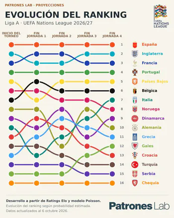
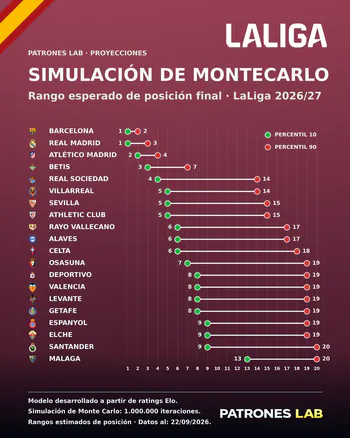
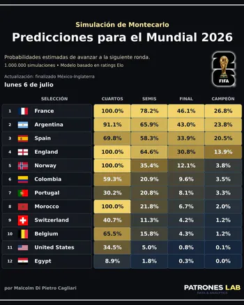
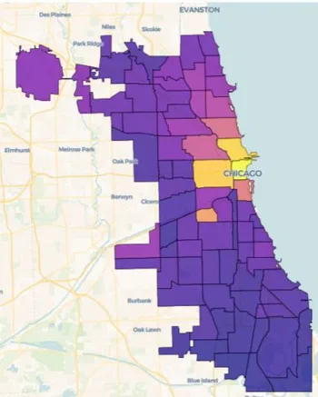
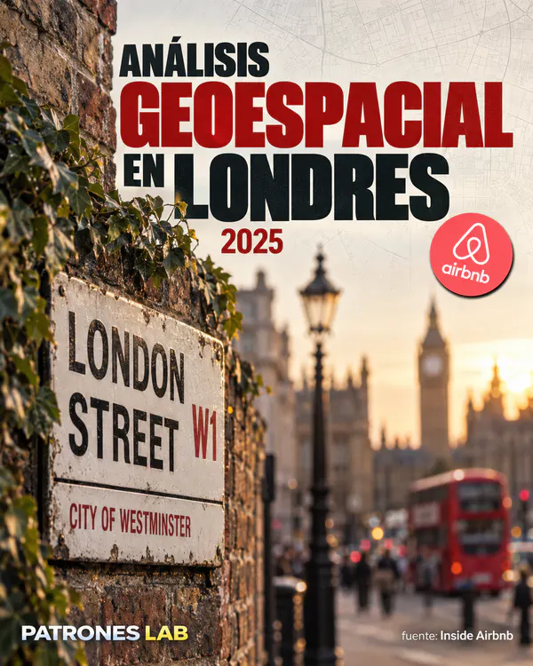

2026/27 チャンピオンズリーグ · 勝ち点予測
ポアソンモデルとモンテカルロ法でリーグフェーズ終了時の勝ち点を予測し、中央値と25～75、5～95パーセンタイルの範囲を表示。
投稿を見る ↗ポアソンモデルとモンテカルロ法でリーグフェーズ終了時の勝ち点を予測し、中央値と25～75、5～95パーセンタイルの範囲を表示。
投稿を見る ↗
第3節までの各時点でポアソンモデルとモンテカルロ法により100万回シミュレートし、予測最終順位の推移を確認。
投稿を見る ↗
100万回のモンテカルロ・シミュレーションで予測したラ・リーガ各チームの最終順位のヒートマップ。
投稿を見る ↗
ポアソンモデルとモンテカルロ法でチャンピオンズリーグの8位以内、プレーオフ進出、敗退の確率を推定。
投稿を見る ↗
各チームのEloレーティング、予測勝ち点、シミュレーション結果の範囲を比較。
投稿を見る ↗
シミュレーションによる勝ち点をヒストグラムで示し、大会でよく生じる結果を調べます。
投稿を見る ↗
最終順位をパーセンタイルで比較し、起こりやすい結果の範囲を表示。
投稿を見る ↗
試合結果と順位を推定するポアソンモデルとモンテカルロ・シミュレーションの紹介。
投稿を見る ↗
シミュレーションに関するLinkedInの投稿。詳しい内容は確認待ちです。
投稿を見る ↗
試合日ごとに見る代表チームの予測順位の推移。
投稿を見る ↗
ポアソン得点モデルとモンテカルロ法でチャンピオンズリーグの結果を予測。
開発中のプロジェクトを見る ↗
代表チームごとにEloレーティングとネーションズリーグの推定優勝確率を比較。
投稿を見る ↗
グループステージから決勝まで、大会の各段階に進む確率。
投稿を見る ↗
UEFAネーションズリーグの各種確率を分析するシミュレーションモデルの紹介。
投稿を見る ↗
AENAの公開データからバレアレス諸島の航空活動を分析。
投稿を見る ↗
グループ首位、決勝トーナメント各ラウンドの突破、優勝の確率をシミュレーション。
プロジェクトを見る ↗
最新の試合結果とEloレーティングを反映し、最終順位の確率を更新。
投稿を見る ↗
2026/27ラ・リーガのシミュレーションに関する投稿。詳細は確認待ちです。
投稿を見る ↗
シナリオをシミュレーションし、ラ・リーガの最終順位とシーズン結果の確率を推定。
開発中のプロジェクトを見る ↗
2026/27ラ・リーガのシナリオに関する投稿。詳細は確認待ちです。
投稿を見る ↗
取引データにDBSCANを適用し、取引の集まりと外れ値を抽出。
投稿を見る ↗
シカゴのタクシー移動に見られる時間的・地理的・経済的な傾向を調査。
投稿を見る ↗取引記録と不正に関連する兆候を分析する分類モデル。
投稿を見る ↗
Patrones Labとそのデータ分析、モデリング、可視化プロジェクトの紹介。
投稿を見る ↗
複数の分類手法を比較し、気象現象による経済被害を調べるモデル。
開発中のプロジェクトを見る ↗
仕入先別支出のダッシュボードで、推移、カテゴリー、地域別分布を確認。
プロジェクトを見る ↗
Spotifyランキングのダッシュボードで、再生数、推移、国別の分布を分析。
開発中のプロジェクトを見る ↗
ワールドカップの優勝確率と決勝で実現しうる対戦カードを更新。
投稿を見る ↗
ワールドカップ準々決勝の対戦カードと決勝トーナメントを勝ち進む確率をシミュレーション。
投稿を見る ↗
ワールドカップで準決勝進出、決勝進出、優勝の確率を推定。
投稿を見る ↗
32強の試合結果を反映し、勝ち上がりと優勝の確率を更新。
投稿を見る ↗
その時点で判明していた試合結果をもとに、ラウンド別の勝ち上がり確率を予測。
投稿を見る ↗
代表チームごとの勝ち上がりと優勝の確率を推定するシミュレーションモデル。
プロジェクトを見る ↗
ポジション別のパーセンタイルと90分あたりの指標でアルゼンチン代表選手を比較。
投稿を見る ↗
パーセンタイルのレーダーチャートでカタール大会の選手の個人成績を比較。
プロジェクトを見る ↗
アルゼンチン対フランスの決勝で、ボールを持ったプレーが攻撃の脅威度をどう変えたかを分析。
投稿を見る ↗2022年カタール大会のアルゼンチン対フランスを確率の視点から読み解く記事。
記事を読む ↗
カタール大会の各シュートが得点になる可能性を推定する確率モデル。
プロジェクトを見る ↗2022年カタール大会でボールを持ったプレーが生んだ攻撃の脅威度を分析。
プロジェクトを見る ↗
対話型ダッシュボードで、シカゴで報告されたタクシーの需要と経路を確認。
投稿を見る ↗
オープンデータで作成した、シカゴ市内の各地域における乗車の集中を示す地図。
投稿を見る ↗
シカゴのタクシーの乗降エリア、経路、地理的な集中を分析。
投稿を見る ↗報告された乗車記録から利用の多いエリアと乗降地点間の移動を示した地図。
プロジェクトを見る ↗対話型ダッシュボードでシカゴのタクシー運行状況、運賃、経路を確認。
プロジェクトを見る ↗報告された乗車記録を日別、時間帯別、距離別、運賃別に比較。
投稿を見る ↗オープンデータからシカゴのタクシー移動網を分析した記事。
記事を読む ↗シカゴで報告されたタクシー運行の需要、経路、運賃を分析。
プロジェクトを見る ↗
立地、中心部からの距離、地区の特徴から料金を分析。
プロジェクトを見る ↗
部屋タイプごとに相対的に高い物件と安い物件を識別するモデル。
プロジェクトを見る ↗
ロンドンのAirbnb物件の料金と地理的な分布を比較。
投稿を見る ↗ロンドンのAirbnbの料金と地域別分布を扱った記事。
記事を読む ↗ロンドンの宿泊料金、物件タイプ、空室状況、地区ごとの差を調査。
プロジェクトを見る ↗バレアレス諸島の空港について旅客数、路線のつながり、季節変動を分析。
投稿を見る ↗AENAのオープンデータからバレアレス諸島の観光を読み解く記事。
記事を読む ↗AENAの公開データでマヨルカ、イビサ、メノルカの航空交通を分析。
プロジェクトを見る ↗密度に基づくクラスタリングで、通常と異なる取引や不正の可能性を示すパターンを抽出。
プロジェクトを見る ↗取引を教師あり分類し、不正リスクを推定して関連する兆候を読み解きます。
プロジェクトを見る ↗
K-meansで取引を分類し、不正に関連する異常な振る舞いを探ります。
プロジェクトを見る ↗